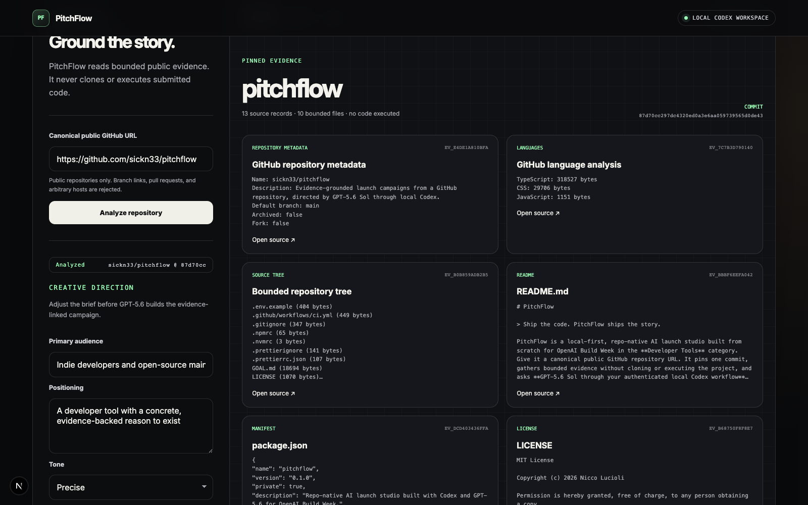
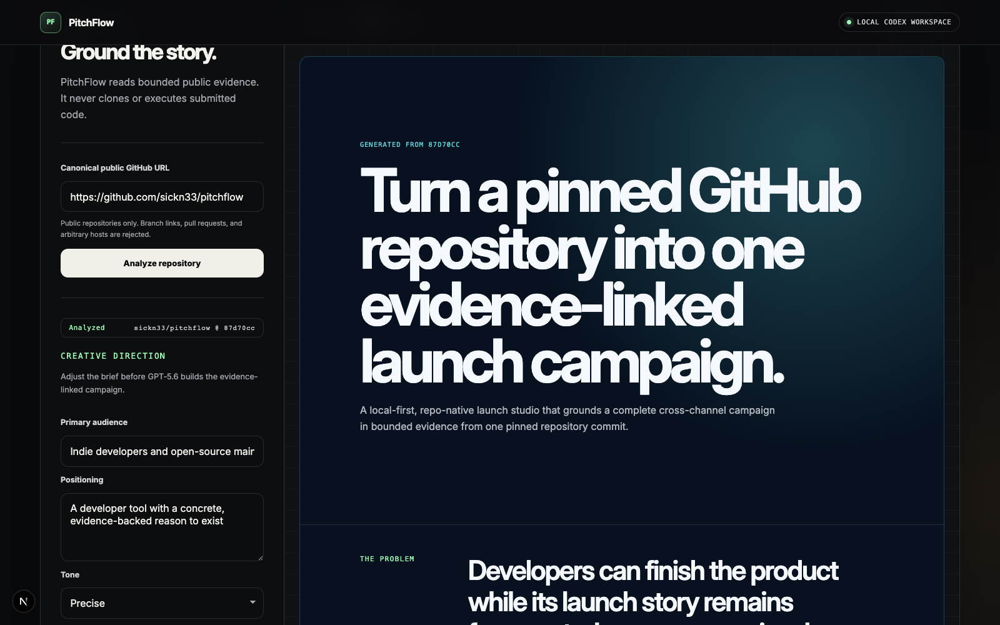
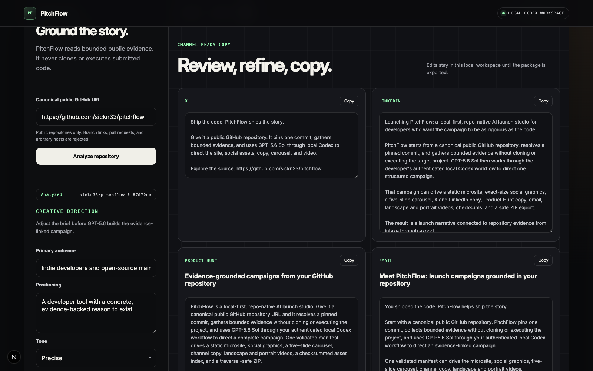
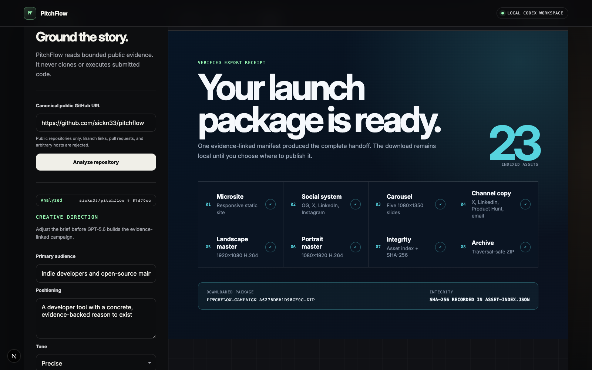

PitchFlow is a local-first, repo-native AI launch studio.
The README describes the product in these terms directly.
ev_bbbf6eefa042 · README.mdA local-first, repo-native launch studio that grounds a complete cross-channel campaign in bounded evidence from one pinned repository commit.




Give PitchFlow a canonical public GitHub repository. It pins one commit, gathers bounded evidence, and directs an evidence-linked campaign through GPT-5.6 Sol in your local Codex workflow.
PitchFlow normalizes the repository URL, resolves a commit, and collects selected metadata, documentation, manifests, and source records without cloning or executing the target project.
Repository excerpts become deterministic evidence records carrying their commit, source URL, content hash, and identifier. The resulting snapshot is checked for integrity before generation.
A structured model turn produces the brief, claims, design, site narrative, social concepts, carousel, channel copy, and motion plan as one evidence-aware campaign.
One validated manifest drives a static microsite, exact-size social graphics, a five-slide carousel, channel copy, landscape and portrait videos, a checksummed asset index, and a traversal-safe ZIP.
Repository analysis, Codex generation, product capture, and Remotion rendering stay local. The public viewer exposes only a versioned, immutable, read-only dogfood package.
The README describes the product in these terms directly.
ev_bbbf6eefa042 · README.mdThe README and architecture documentation explicitly describe repository intake, commit resolution, bounded evidence, and the no-clone, no-execution boundary.
ev_bbbf6eefa042 · README.mdev_d5f3383efcb7 · docs/ARCHITECTURE.mdThe Codex collaboration and architecture documents specify the model, SDK path, and local authentication flow.
ev_1cf6267e8c8a · docs/CODEX_COLLABORATION.mdev_d5f3383efcb7 · docs/ARCHITECTURE.mdThe README directly lists these outputs as products of one validated CampaignManifest.
ev_bbbf6eefa042 · README.mdThe Codex collaboration document explicitly enumerates the structured campaign components.
ev_1cf6267e8c8a · docs/CODEX_COLLABORATION.mdThe architecture and README explicitly define these operations as local.
ev_d5f3383efcb7 · docs/ARCHITECTURE.mdev_bbbf6eefa042 · README.mdThe architecture document describes the immutable viewer and its read-only route behavior.
ev_d5f3383efcb7 · docs/ARCHITECTURE.mdThe media brief states these capture requirements directly.
ev_3a4e5181b3d0 · docs/MEDIA_BRIEF.md